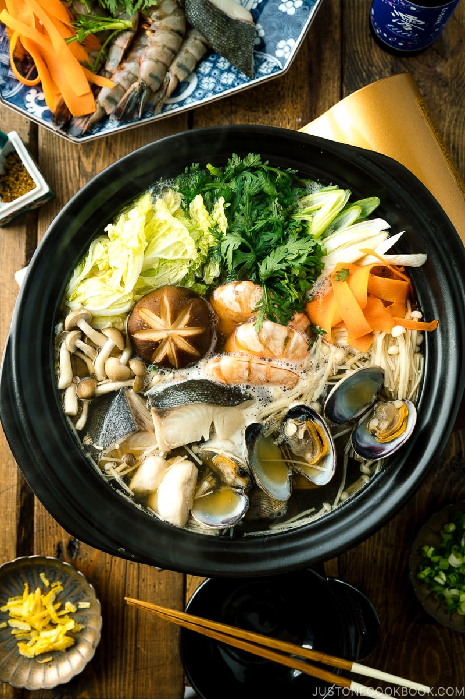

HOME
Yosenabe (Japanese Hot Pot) 寄せ鍋

Description
Yosenabe is a basic Japanese hot pot where you can cook whatever ingredients—chicken, seafood, tofu, and all kinds of vegetables—in a delicious dashi-based broth.
Ingredients
For Yosenabe Broth
- 960 ml dashi (Japanese soup stock; click to learn more)
- 4 Tbsp sake
- 4 Tbsp mirin
- 4 Tbsp usukuchi (light-colored) soy sauce
- 1 tsp kosher or sea salt (I use Diamond Crystal; use half for table salt)
For Yosenabet Ingredients
- 10 manila clams (11.4 oz, 325 g; it's very important to follow this instruction to prepare clams)
- 8 shrimp (8.8 oz, 250 g)
- 4 fillets black cod/sablefish (gindara) (1 lb, 454 g)
- chicken tenders (4.6 oz, 130 g)
- ½ piece napa cabbage (1.4 lb, 628 g)
- ½ bunch shungiku (tong ho/garland chrysanthemum) (4 oz, 125 g)
- 1 carrot (2 oz, 60 g)
- 1 Tokyo negi (naga negi; long green onion) (1.4 oz, 40 g)
- 1 bunch enoki (6 oz, 170 g)
- 1 shimeji mushrooms (3.5 oz, 100 g)
- 4 shiitake mushrooms (3.2 oz, 90 g)
- 1 medium tofu (momen tofu) (14 oz, 397 g)
For Optional Garnish
- 1 green onion/scallion
- 1 Tbsp yuzu zest (I used freeze dry yuzu zest)
- shichimi togarashi (Japanese seven spice)
Steps
To Prepare Yosenabe Broth
- Gather all the ingredients.
- In a large pot (I used this donabe), combine dashi, sake, mirin, soy sauce, and salt. Cover and bring it to a simmer, and then turn off the heat. Set aside.
To Prepare Ingredients
- Gather all the ingredients. Yosenabe is pretty flexible and you can substitute any of the listed ingredients with whatever you have or want to eat.
- Shrimp: Devein shrimp by following this instruction. Insert the tip of the skewer sideways about ½ inch (1.3 cm) down from the head of the shrimp (whether it's a shell on or off) and pull the skewer tip up towards you. This will lift up the vein and you can pull it off with the skewer or with your hand. If the vein is broken, then insert again a bit lower towards the tail. If you can’t find the vein, then don’t worry about it.
- Chicken tender: To remove the tendon, firmly grab the end of the tendon (maybe use a paper towel to increase grip) and place the knife on top of the tendon as you see in the image below. Using the knife to hold the chicken in place, pull the end of the tendon as you push the chicken away. Repeat with the rest of the chicken tenders. Then hold your knife diagonally, nearly parallel to the cutting board, and then slice the tender. This cutting method gives it more surface area so that it cooks faster and soaks up flavor quickly. This cutting technique is called sogigiri in Japanese.
- Fish: Cut the fish fillets in half. Place all the seafood ingredients on a platter.
- Napa cabbage: Remove the core, separate the leaves, and rinse them carefully. Then cut them into 2-inch (5 cm) pieces.
- Cut the tough bottom part of the leaves into smaller strips/pieces.
- Chrysanthemum leaves: Cut them into 2-inch (5 cm) pieces. Negi: Cut it diagonally into ½-inch (1.3 cm) pieces.
- Carrot: Using a vegetable peeler, peel the carrot into thin ribbons. Place all the vegetables on another platter.
- Enoki mushrooms: Discard the bottom and cut into 2-inch (5 cm) pieces. Shimeji mushrooms: Discard the bottom and separate them.
- Shiitake mushrooms: Discard the bottom. If you like, you can curve the cap of shiitake mushrooms to make them look like a flower by following this instruction.
- Tofu: Cut it into smaller pieces. Place the mushrooms and tofu on another platter.
- Green onion: Cut it into small pieces for garnish.
To Cook Yosenabe
- Bring the broth to a boil. If you are cooking root vegetables such as daikon, gobo (burdock root), and carrots (if not ribbons), start cooking them while you are heating up the broth. They take a longer time to cook. Once boiling, add various kinds of ingredients to the pot and arrange them by sections. For example, group the napa cabbage in one area, while mushrooms stay in one area and seafood in another. This way, you can choose what you want to eat. Close the lid and cook for 8-10 minutes. Keep an eye on leafy greens. Dish them out early if they turn soft and ready to eat.
- Pick up the cooked food and enjoy while they are hot. For yosenabe, the ingredients are cooked in a flavorful broth; therefore, we do not dip the cooked food in a dipping sauce like shabu shabu. We sprinkle chopped green onion, yuzu zest, and/or shichimi togarashi to enjoy.
- Once all the cooked ingredients are served and cleared from the hot pot, add a new batch of ingredients. Cover the lid and start cooking for 10 minutes. Add water if the broth is low in the pot.
- Enjoy and repeat 1-2 more rounds until you finish all the ingredients.
To Store
- You can keep the leftovers in an airtight container and store them in the refrigerator for up to 2 days.